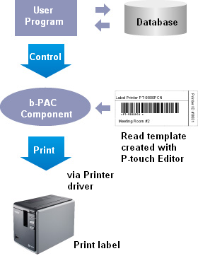

b-PAC Summary
b-PAC is a component for outputting to hardware from
our P-touch/Mobile Printer/Stampcreator series (hereafter, simply referred to as
"P/M/S series").
It is used to replace text, barcodes and images (illustrations) within template
files created with P-touch Editor.
b-PAC is packaged as a COM automation server.
If an application that can handle COM automation servers, such as Visual Basic®,
Visual C++®, or Visual C#® or a development environment is used, outputting is
possible without using P-touch Editor.
